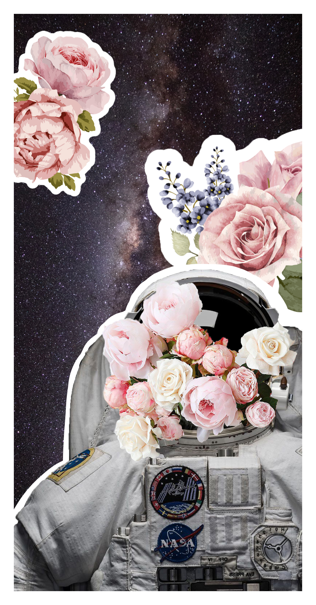

The idea behind this triptych came from a quote of Lean de La Fontaine: “There is no road of flowers leading to glory.” It also applies to astronauts (in literal meaning), a difficult job that not everyone can do. After the hardship they have to face, there is glory when they come back from space. Process: same with the previous collage, I also selected the objects I wanted from the triptych in photoshop and placed them in the positions I wanted. Then I used Procreate for painting. I did some reductive drawing for the left collage.
